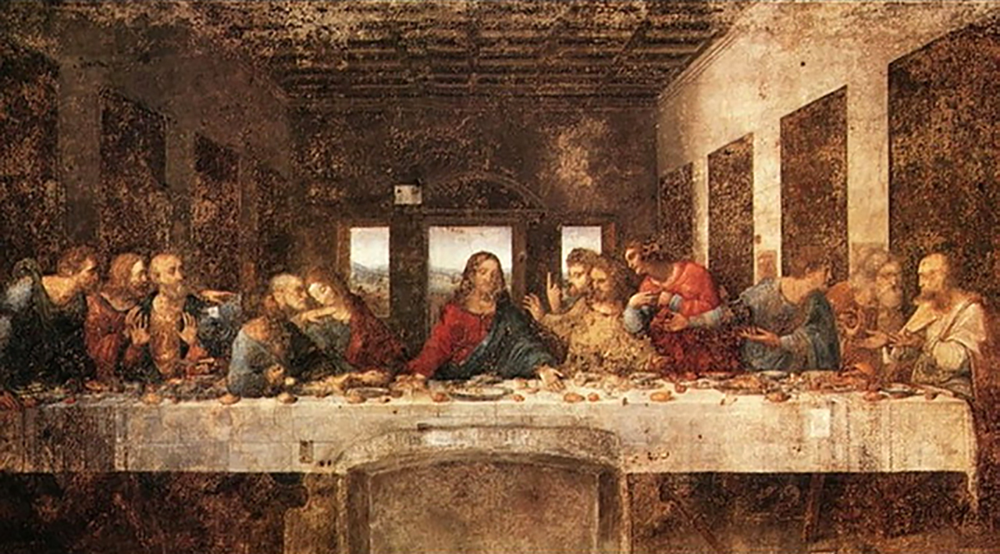

PowerUp!
learn to hacking
什么是黑客?
黑客- Hacker
为什么叫黑客?
- hack的字典解释是砍(木头)
- 解决一个计算机难题就好比砍倒了一棵大树.
- 于是完成这种hack的过程叫hacking,而从事hacking的人就是hacker.
黑客的特征
- 精湛的技艺.
- 高度的革新
- 独树一帜的风格
- 好玩,高智商,探索精神.
黑客伦理
- Access to computers - and anything that might teach you something about the way the world works-should be unlimited and total. Always yeild to the Hand-On Imprerative!
- All imformation should be free
- Mistrust Authority- Promote Decentralization
- Hackers should be judged by their hacking, not bogus criteria such as degress, age, race, or position
- You can create art and beauty on a computer.
- Computers can change your life for the better
黑客入侵
*分享,开放,民主,进步.对于黑客而言,关着的门就是一种挑衅,锁着的门则是一种侮辱.
- 1983年,米尔沃基市黑客"入侵系统"事件,使人们对黑客有了错误的看法
- 为了不违背黑客的初衷,恶意入侵计算机系统的人称为cracker,以此和hacker区分.
Hacking = 艺术

背景
- 米兰公国的掌权者罗督维科,每逢周二/四,都要到修道院同修道士们一起进餐
- 他希望能够在用餐时看到一副表现《圣经》中最后晚餐场面的壁画，以使所有人感念基督的苦难与恩泽
需求分析
- 项目情况:三年工期,完成修道院内的大型壁画
- 环境情况:食堂尽头的墙壁正对着修道院的餐桌
- 项目约束:基本需求请参考标准文档《圣经》
设计
- 场景:一天晚上的宴会中,正当众人静静用餐的时候,耶稣突然说:"你们中间有一个人要出卖我."
- 架构:将画面展现于饭厅一端的整块墙面,厅堂的透视构图与饭厅建筑结构相联结,使观者有身临其境之感
黑客与画家
*黑客与画家有很多共同之处.→ 创造者
→ 换位思考
→ 多人合作
→ 反复的修改和重构
→ 需要`临摹`和`赏析`
→ 只有不断的练习才能进度
→ 作品需要具备自身的解释能力
→ 追求完美
黑客的技艺
编程就像绘画
你从一个空白的地方和某些基本原料开始,
通过知识,艺术和技艺的结合去确定做什么.
你勾画出全景,绘制背景,然后填入各种细节.
你不时后退一步,用批判的眼光观察你的作品.
常常,你会扔掉画布,重新再来
编程是一种需要用心修炼的技艺....
怎么修炼?
修炼之道
要成为一个高手,其实道通常都很简单.
只不过,当水平不够的时候,你永远不能悟到这些道.
当水平达到的时候,这些道自然就会通.
所以有时候,道在低手眼里是废话,在高手眼里也是废话.
编程之道是一门哲学...
DRY(Don't Repeat Yourself)
*系统中的每一项知识都必须具有单一、无歧义、权威的表示.KISS(keep it simple&stupid)
*保持简单和直接,简单就是美"when in doubt, use brute force"
Principle of least astonishment
*最小惊讶.设计和代码应该尽可能减少让读者惊喜我的代码被猫给吃了
*出现问题后，要提出解决方案，而不是找借口不要容忍破窗户
*一辆废弃的轿车放置了一个星期,无人理睬,而一旦有一扇窗户配打破,数小时之内车上的设备就会被抢夺一空,车子也被翻个底朝天.一个整洁、运行良好的系统，一旦窗户开始破裂，就相当迅速的恶化;
设计低劣,错误决策,糟糕的代码,无尽的bug,看到一个修复一个.
薛定谔的猫
*不存在最终的目标,也没有终极的架构项目的任何一个模块一个组件都是可撤销,可替换的
交流
知道你想要说什么 → 了解你的听众 → 选择时机 → 选择风格
→ 让传递的东西美观 → 让听众参与 → 做倾听者 → 回复别人
不要靠巧合编程 
*不知道代码为什么会执行失败,是因为一开始就不知道它为什么能工作.- 无论什么时候都要先搞清楚你自己在做什么.
- 不要盲目的编程,你所写的代码都是深思熟虑过后的产物,先设计,再产出
- 合理的时间管理.划分工作优先级,制定工作计划,按计划行事.
- 不仅测试代码,还要测试你的假设,不要猜测,要实际尝试它.
- 不要做历史的奴隶,不要让已有的代码支配,如果不适用,所有的代码都可以被替换和重构.
一切都要自动化
- 构建和测试自动化;
- 多用python、shell等脚本语言,将重复性任务自动化实现;
- 对于编程中的重复性代码,通过脚本自动生成代码来实现;
- 在工作中多总结，提炼小系统，让流程、代码都自动化;
早重构,常重构
*重构:一言蔽之,就是在不改变外部行为的前提下,有条不紊地改善内部
怎么进行重构？
- 不要试图在重构的同时,增加新的功能
- 在开始重构之前,确保你有良好的测试.变改动边测试,利用单元测试来确保你重构的质量.
- 先局部重构,再整体重构.
代码的未来
高级语言的斗争
*编程语言现在有几百种之多,代码就像生物一样,存在一个进化的过程.流行语言需要具备的要素
- 大环境.外部因素会影响到语言的流行.
- 简洁.书写简单,语法优雅.有涵养的懒人必然喜欢简洁而优雅的东西.
- 函数库.避免重复造轮子.
- 效率.语言的执行效率，开发效率.
- 最后,一切都敌不过时间.新的语言产生都是为了解决特定的问题,这个问题是否是持久的,就需要时间的考验.
怎么选择语言？
“你用什么语言其实并不重要，关键是你对代码之外的理解”?至少要掌握两类编程语言:
→ 面向对象语言(如C++, Java®,Python®)
→ 高级脚本语言(Python®, Perl®, Ruby®)
内核最小,最干净的语言必然会活在进化的主干上.一百年后什么语言会流行？我想绝对不会是C/C++/JAVA之流,或许根本不存在编程语言了.
工具
工具可以放大你的才干
好的工具使你事半功倍,坏的工具使你事倍功半工具需要积累,每件工具都有其自身的特性,
我们不仅仅需要学习它,熟悉它,驾驭它，
最重要的是,了解工具背后的思想
基础工具推荐
工具本身不重要，重要的工具带来的衍生意义shell
→ shell/power shell/batch(理念:shell简单好用，它的背后是设计哲学KISS)
配置管理
→ CVS/VSS/clearcase/GIT/Lint理念:GIT背后的Github,Lint不是配置管理工具,但静态代码校验器通常可以和配置管理工具一起用
编辑器
→ vim/emacs/notepad++/sublime text/atom/vscode编辑器必须具备可配置，可扩展，被动代码生成，IDE特性(编码,调试)等，你至少需要懂得一个终端编辑器
IDE
→ visual studio/eclipse/IntelliJ IDEA/PyCharm/Webstrom可以提高生产力，但我不推荐
笔记
→ evernote/youdao/Wiznote等一个在线笔记工具就是你的在线工作空间和知识库,它能使你工作更高效.你可以随时随地的记录灵感,收集信息以及写作.
个人站点
→ blog: Jekyll/Hexo/Gitbook要有适当的交流,不要闭门造车.同时,个人站点可以是你最有效的总结和输出的方式.
推荐书单
设计类
大多数程序员都应该读的书
- Programming Pearls(编程珠玑)
- Code Complete（代码大全）
- Refactoring: Improving the Design of Existing Code（重构，改善既有代码的设计）
- The Mythical Man-Month (人月神话)
- Head First Design Patterns（深入浅出设计模式）
- object oriented software construction(面向对象开发的基本原理)
比较晦涩,领域需求可以选读的书
- Introduction to Algorithms （算法导论）
- The Art of Computer Programming（计算机程序设计艺术）
- Compilers：Principles，Techniques，and Tools（编译原理）
- Programming Pearls（UNIX编程艺术）
- PMBOK (项目管理知识体系指南)
Thank You
"Access to computers. We learn the world. We share the unlimited knowledge. We create the beauty. We change the world."
思从深而行从简.
其他引用
Google的职业生涯：技术开发指导Hadoop快速入门
Docker使用指南
代码的味道